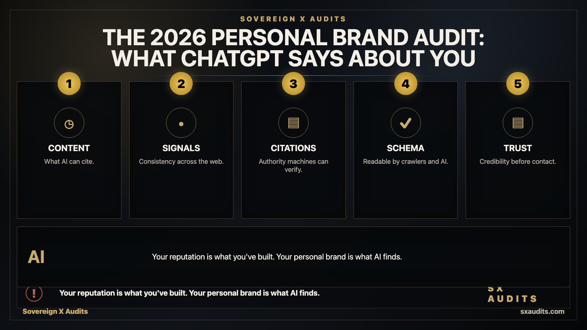
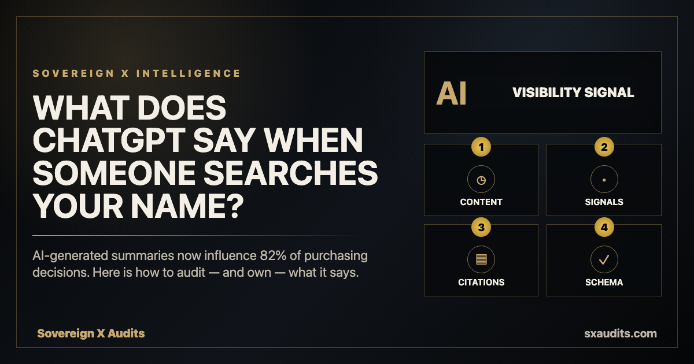

2026-personal-brand-audit


Briefs
Hero brief
Dark background. A split visual: on the left, a professional headshot surrounded by content signals — LinkedIn followers, newsletter subscribers, published articles. On the right, a ChatGPT response to "[name]" — a brief, partially inaccurate summary that omits the person's most important work. Caption: "Your reputation is what you've built. Your personal brand is what AI finds." Sovereign X Audits branding bottom right.
OG brief
Dark background. Large headline: "What does ChatGPT say when someone searches your name?" Subtext: "AI-generated summaries now influence 82% of purchasing decisions. Here is how to audit — and own — what it says." Sovereign X Audits logo bottom left. sxaudits.com bottom right.